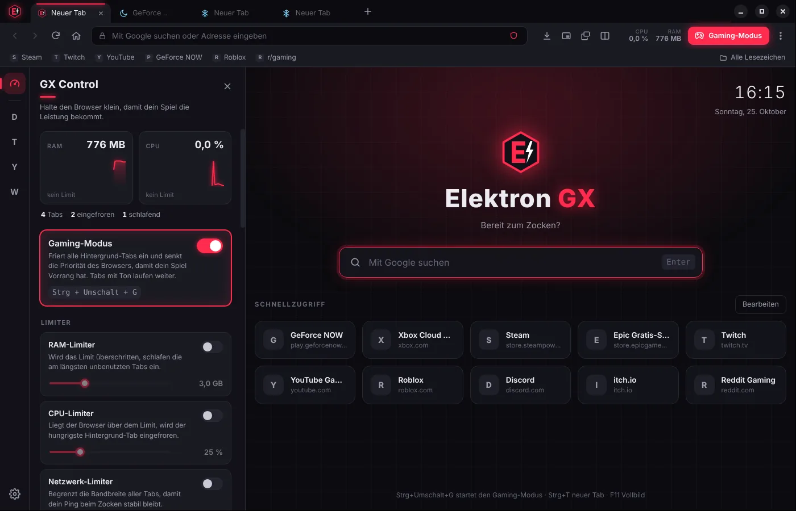
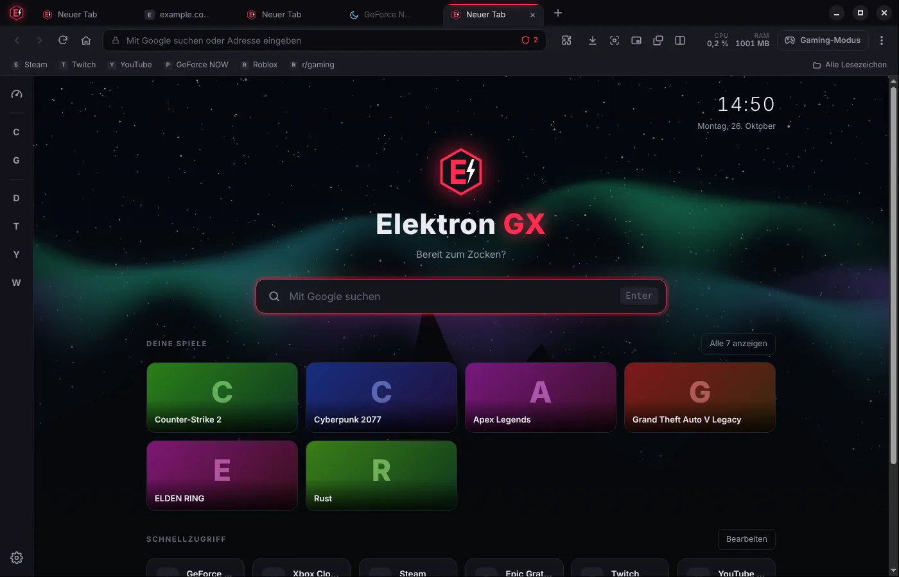

Gaming-Modus
Ein Klick oder Strg+Umschalt+G: Hintergrund-Tabs werden eingefroren und der Browser bekommt weniger Priorität. Dein Spiel hat Vorrang.
Kostenlos · Windows 10 & 11
Elektron GX hält sich im Hintergrund klein, friert ungenutzte Tabs ein und lässt dich Twitch, Discord und YouTube nebenbei laufen – ohne dass deine FPS leiden.

Alles, was ein Browser neben dem Spiel können muss – und nichts, was stört.
Ein Klick oder Strg+Umschalt+G: Hintergrund-Tabs werden eingefroren und der Browser bekommt weniger Priorität. Dein Spiel hat Vorrang.
Live-Anzeige von RAM, CPU und Grafikkarte (Auslastung, Temperatur, VRAM), dazu Limiter für Arbeitsspeicher, Prozessor und Bandbreite – damit dein Ping stabil bleibt.
Zwei Tabs nebeneinander, Trennlinie frei verschiebbar. Guide links, Stream rechts.
Jeder Tab als kleines Fenster, das über allem bleibt – mit Transparenz-Regler. Videos klappen automatisch als Bild-in-Bild aus.
Blockiert Betrugs- und Virenseiten, lädt Seiten nur verschlüsselt (HTTPS), prüft Downloads mit Windows Defender und blockt Werbung – auch auf YouTube.
Claude, ChatGPT, Discord, Twitch, YouTube und WhatsApp immer griffbereit. Rechtsklick → Seite zusammenfassen, Text erklären oder übersetzen.
Bitwarden, Dark Reader, Avast & Co. direkt aus dem Chrome Web Store. Dazu Lesezeichen, Verlauf, Downloads, private Tabs und PDF-Anzeige.
Die Startseite zeigt deine installierten Steam-Spiele. Ein Klick – und das Spiel startet. Dazu 8 Hintergründe oder dein eigenes Bild.
Strg+Umschalt+X macht einen Screenshot – auch von der ganzen Seite – und kopiert ihn direkt für Discord. F9 zeigt Artikel ohne Werbung.
Ein Schalter in den Einstellungen macht aus Elektron GX einen ruhigen Alltags-Browser – und wieder zurück.
Neue Versionen und Sicherheitsupdates werden im Hintergrund geladen und beim nächsten Start installiert.

Kostenlos für Windows 10 und 11 (64 Bit). Keine Anmeldung, keine Werbung.
Elektron GX herunterladenNeueste VersionBeim ersten Start fragt Windows evtl. nach („Der Computer wurde durch Windows geschützt“) → Weitere Informationen → Trotzdem ausführen.
Elektron GX ist (noch) nicht mit einem kostenpflichtigen Zertifikat signiert. Windows SmartScreen warnt deshalb bei neuen Programmen. Über „Weitere Informationen“ → „Trotzdem ausführen“ geht es weiter.
Er nimmt ihnen nichts weg: Im Gaming-Modus und beim Minimieren ruhen Tabs, und die Limiter halten RAM, CPU und Bandbreite klein. Mehr FPS als ohne Browser gibt es natürlich nicht.
Nein. Diese Dienste brauchen ein lizenziertes Kopierschutz-Modul (Widevine), das Elektron GX nicht hat. Twitch, YouTube, GeForce NOW und Xbox Cloud Gaming funktionieren.
Ja: Menü (⋮) → „Als Standardbrowser festlegen …“ und in den Windows-Einstellungen Elektron GX wählen.
Ja – über Menü → „Chrome Web Store“ einfach auf „Hinzufügen“ klicken. Die meisten Erweiterungen laufen wie in Chrome. Sehr umfangreiche Erweiterungen, die spezielle Chrome-Funktionen brauchen (z. B. eigene Seitenleisten), funktionieren eventuell nur teilweise.